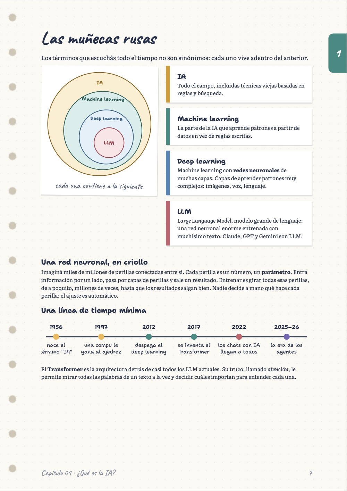
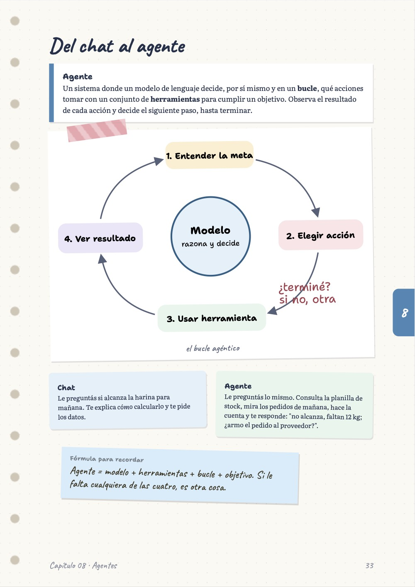
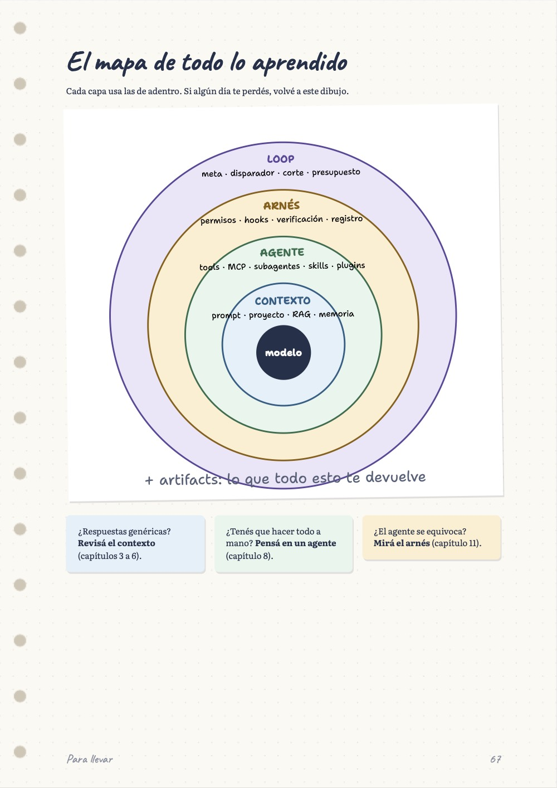
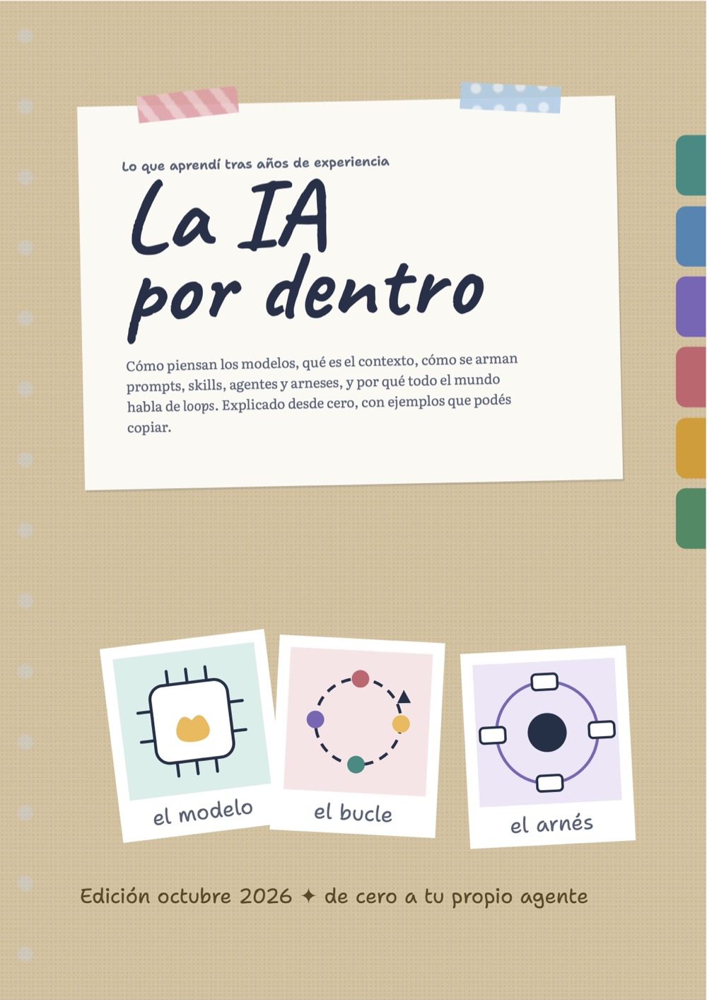

Caps. 01 y 02 · Entender la máquina
El modelo
Qué es la IA, qué es un LLM y cómo predice palabra por palabra. Tokens, entrenamiento y razonamiento, explicados con perillas y tortas en vez de fórmulas.
tokenspredicciónentrenamientorazonamiento
Lo que aprendí tras años de experiencia
Cómo piensan los modelos, qué es el contexto, cómo se arman prompts, skills, agentes y arneses, y por qué todo el mundo habla de loops. Explicado desde cero, con ejemplos que podés copiar.
71 páginas13 capítulosPDF
Edición octubre 2026 ✦ de cero a tu propio agente
Antes de empezar
Lo escribí como desarrolladora, pensando en alguien que nunca programó y quiere entender de verdad qué pasa adentro de Claude, ChatGPT o Gemini. La idea no es memorizar términos, sino poder usarlos.
Personas que usan IA todos los días y quieren dejar de probar suerte.
Emprendedores que quieren automatizar partes de su negocio.
Curiosos que escuchan agentes, RAG o harness y no saben qué son.
Devs que necesitan una forma clara de explicárselo a su equipo o a sus clientes.
Saber programar. Cuando aparece algo técnico, una nota te avisa que no hace falta entenderlo para seguir.
Matemática. Los conceptos se explican con dibujos y analogías.
Pagar herramientas para entender el libro. Algunas prácticas sí usan herramientas pagas, y te lo aviso.
El recorrido completo
El cuaderno va de lo más simple a lo más poderoso, y cada capítulo usa lo que viste en el anterior. Bajá y armalo capa por capa.
+ artifacts: lo que todo esto te devuelve
Caps. 01 y 02 · Entender la máquina
Qué es la IA, qué es un LLM y cómo predice palabra por palabra. Tokens, entrenamiento y razonamiento, explicados con perillas y tortas en vez de fórmulas.
Caps. 03 a 06 · Hablarle bien
Todo lo que el modelo ve en un momento dado. Cómo armar un buen pedido, ordenar tu información en un proyecto y hacer que encuentre el dato correcto con RAG.
¿Respuestas genéricas? Revisá el contexto.
Caps. 08 a 10 · Hacer que actúe
Un modelo que decide en un bucle qué herramienta usar hasta cumplir un objetivo. Cómo se crea uno en tres niveles, qué es MCP y cómo enseñarle un oficio con skills.
¿Hacés todo a mano? Pensá en un agente.
Cap. 11 · Harness engineering
Todo lo que rodea al modelo para que puedas confiarle algo real: instrucciones, permisos, controles y memoria. Con hooks y permisos de ejemplo para copiar.
¿El agente se equivoca? Mirá el arnés.
Cap. 12 · Loop engineering
En vez de pedirle cada paso, le diseñás el circuito: una meta, qué lo dispara, cuándo corta y cuánto puede gastar. Y los riesgos de dejarlo andar sin mirar.
Capítulo 08 · Agentes
Mili, la dueña de La Miga, hace la misma pregunta dos veces. Bajá para ver al agente dar vueltas por el bucle hasta tener la respuesta.
Mili¿Alcanza la harina para mañana?
Chat te dice cómo
Para saberlo necesito el stock actual y los pedidos de mañana. ¿Me pasás esos datos?
Agente lo hace
planilla_stock → harina: 38 kgpedidos_mañana → 50 kg de harinaAgenteNo alcanza, faltan 12 kg. ¿Armo el pedido al proveedor?
Agente = modelo + herramientas + bucle + objetivo
El hilo del libro
La Miga es una panadería de barrio inventada: dos locales, unos cuarenta productos, pedidos por WhatsApp, una planilla de stock y una dueña, Mili, que no tiene tiempo para nada. Si lo entendés con medialunas, lo entendés con lo que sea.
Por dentro
Un cuaderno, no un manual. Cada concepto tiene su dibujo, y cada recurso visual cumple siempre la misma función.



Si solo leés estas tarjetas, igual te llevás el esqueleto del libro.
Post-its con mis comentarios al margen.
El ejemplo que atraviesa todo el libro.
Archivos listos para pegar en tu proyecto.
Índice
Leé un capítulo por vez y probá lo que dice antes de pasar al siguiente. Se aprende usándolo.

Edición octubre 2026
Todo el contenido fue revisado contra la documentación oficial en octubre de 2026. Los conceptos van a seguir valiendo por años; los nombres de comandos y botones pueden cambiar.